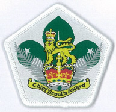
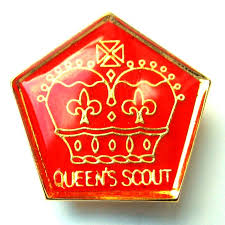

Awards
Chief Scout
 The Chief Scout is the highest award in the Scout Section, To earn this award you have needed to Plan and run an activity for a Patrol or Troop which will include two nights Camping, Demonstrate a knowledge of the World family of Scouting, Work as an activity leader with a Kea Club or Cub Pack for a period of 20 weeks (need not be continuous), Complete the Explorers Challenge, Gain a recognised First Aid Certificate , Take part in an outdoor sport or activity, Participate in it regularly for at least 10 hours over a minimum of three months, Choose a hobby, topic to study or a leisure pursuit, Acquire a reasonable skill in or knowledge of the activity and participate in it regularly for at least 10 hours over a minimum of three months, Research the Young New Zealanders Challenge and explain the requirements for the Scout age group, Attend an organised event of three days duration (away from home and need not be Scouting) e.g. Jamboree, National Scout Schools, School sports, Tournaments, cultural exchanges,Attend a Venturing Explained, Complete two new Personal Challenge Badges When all the other requirements of the Chief Scout Award have been met, make an appointment with the Zone Scout Leader or their appointee to discus your achievements, You will be asked to discuss the part the Scout Law and Promise plays in your life, Prepare and take with you a written CV of your Scouting achievements including any relevant certificates and a logbook or presentation about your expeditions to take to a formal interview where you earn your Chief Scout.
Queens Scout
 The Queen Scout is the highest award in the Venturer Section, Toearn this award you needed to complete Research, plan and complete a “Scout Service Project” that is at least 20 hours total within a six month period, The project should be one you believe in and decided on after a discussion with your Group Leader, This project must be separate and additional to the regular work done as a Junior Leader and you may be assisted to complete this project by the youth members of the Section you work with, Discuss with your Group Leader your service as a Junior Leader and identify how this has helped you in other aspects of your life, Provide the Group Leader with a report of your project and the outcome, Complete any 5-day Residential project of your choice where you are working and mixing with people new to you, Attend at least two activities with yourlocal Rover Crew, or:Register as a leader within your local Scout Group, or Employment or Tertiary Institution studyoptions for you, Have a discussion with the Queen’s Scout Panel about the completion of your award including A report of your Residential Project and explain how you have benefited from it, A report of your Expedition or Exploration activity undertaken for the Gold Award, A summary of your Scout Service Project and evidence of how it has benefited the movement, Knowledge you have gained through the modules you have successfully completed in Bronze, Silver and Gold Awards,Future opportunities within Scouting.